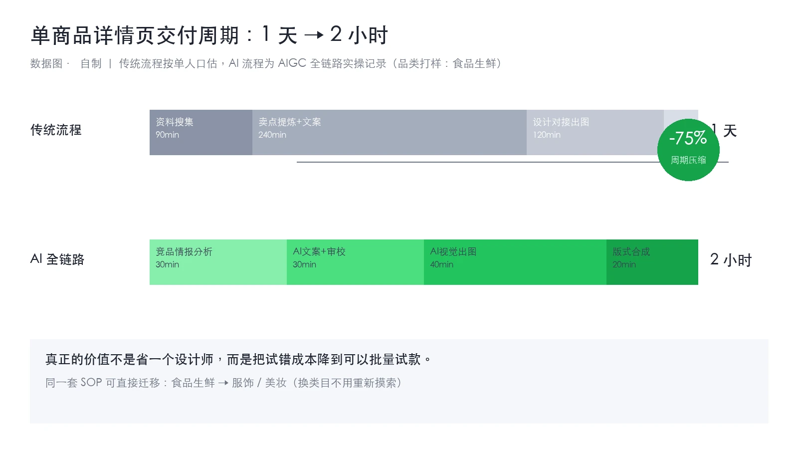
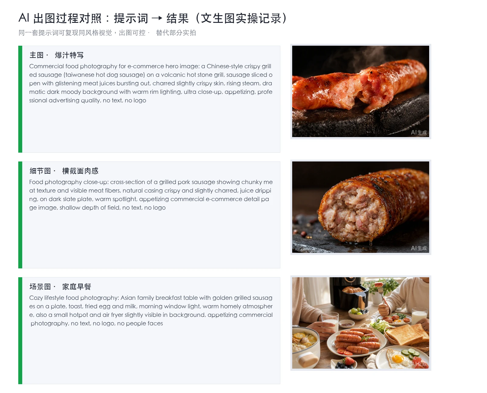
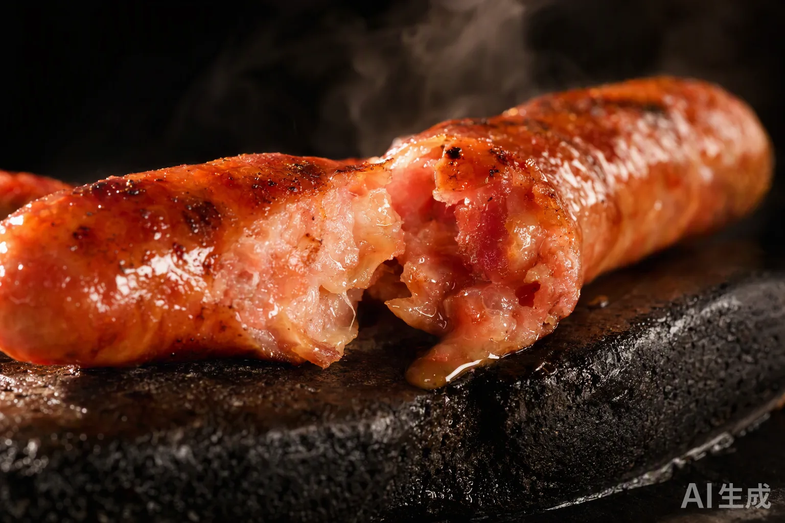
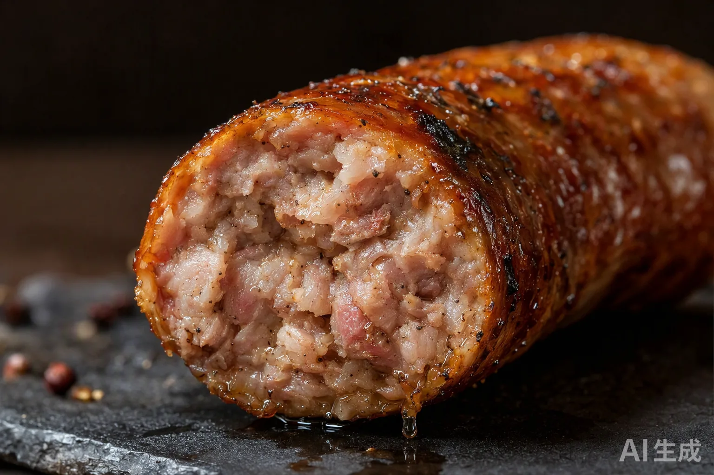
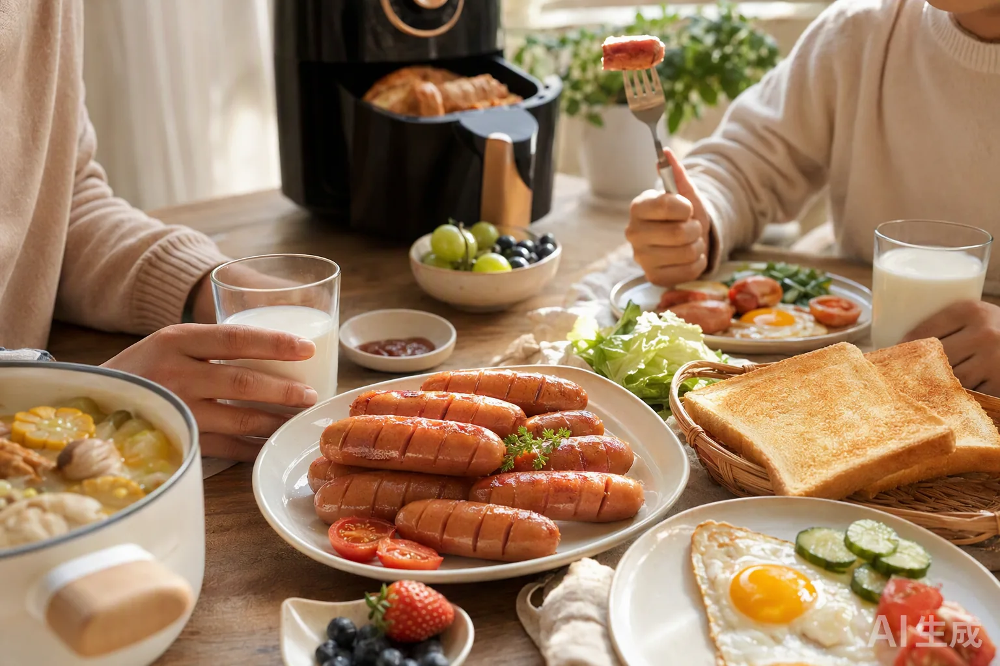
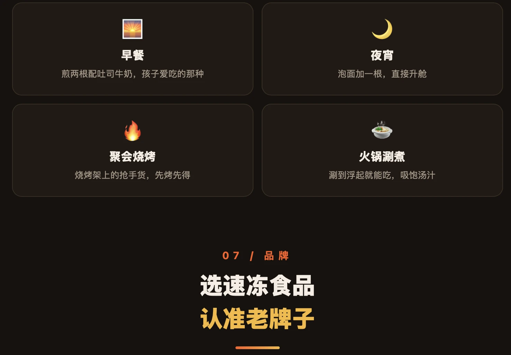

💰 AIGC · 电商商业化
AIGC电商内容全链路：单商品详情页从 1 天到 2 小时
1天→2小时
单商品详情页交付周期（压缩75%）
↓70%
出图成本 · 替代部分实拍
5步
全链路 SOP 沉淀可复用
2类目+
已验证可迁移
项目概览
真正的价值不是省一个设计师，而是把试错成本降到可以批量试款。以食品生鲜验证 AIGC 电商内容全链路，沉淀出的 SOP 可直接复用至服饰、美妆等类目。
🎯 背景与挑战
电商内容生产是典型的「人力密集 + 试错昂贵」流程。以单商品详情页为例，传统流程需要：
- 资料搜集约 90 分钟：找竞品、翻评论、整理卖点素材
- 卖点提炼 ＋ 文案约 240 分钟：人工总结卖点并撰写详情页文案
- 设计对接出图约 120 分钟：与设计师反复沟通、等待排期与返工
合计约 1 天/商品。这意味着上新 10 个款式就要占用大量人天，试款成本高，只能少量押注。
💡 我的策略
我把详情页生产拆成 5 个可交替的步骤，让 AI 承担「出草稿」的部分，人只做判断与把关：
- 卖点提炼：用 AI 做竞品评论分析，从真实评价里挖卖点，替代拍脑袋
- AI 文案：按平台调性与卖点结构，批量生成详情页文案
- 视觉出图：可灵 / 即梦生成主图与场景图，替代部分实拍
- 版式合成：文案与视觉按模块拼装成完整详情页，无需设计接力
- SOP 沉淀：流程固化为可复用文档，换类目不用重新摸索
⚙️ 执行过程
01
竞品情报分析
AI 分析竞品评论区，从真实评价里提炼用户真正在意的卖点（约 30 分钟）。
02
AI文案＋审校
按卖点结构批量生成文案，人工只做审校与调性（约 30 分钟）。
03
AI视觉出图
用同一套提示词生成主图、细节图、场景图，风格可复现（约 40 分钟）。
04
版式合成
文案与视觉按模块拼装成完整详情页（约 20 分钟）。
05
SOP沉淀
把流程固化为文档，换类目直接复用。
出图环节的关键是提示词的可复现性——同一套提示词可以稳定产出同风格视觉，所以「可控」比「好看」更重要。下图是提示词与生成结果的对照记录。
📊 成果数据






效率数字之外，更关键的是链路可迁移：换类目时按同一套 SOP 填空即可——食品生鲜 → 服饰 / 美妆，不用重新摸索流程。
🧠 复盘与方法论
省下的不是「一个设计师的工时」，而是把每次试错的边际成本降到足够低，让「批量试款、数据选品」成为可能。这也是 AIGC 在电商侧真正的商业价值。
案例一验证的是「AI 扩产能 + 数据选方向」，这里验证的是「AI 降成本 + 流程可复制」——同一套思路应用在不同业务目标上。